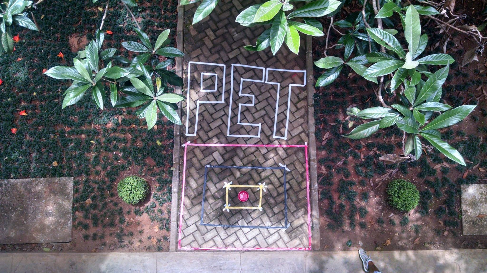
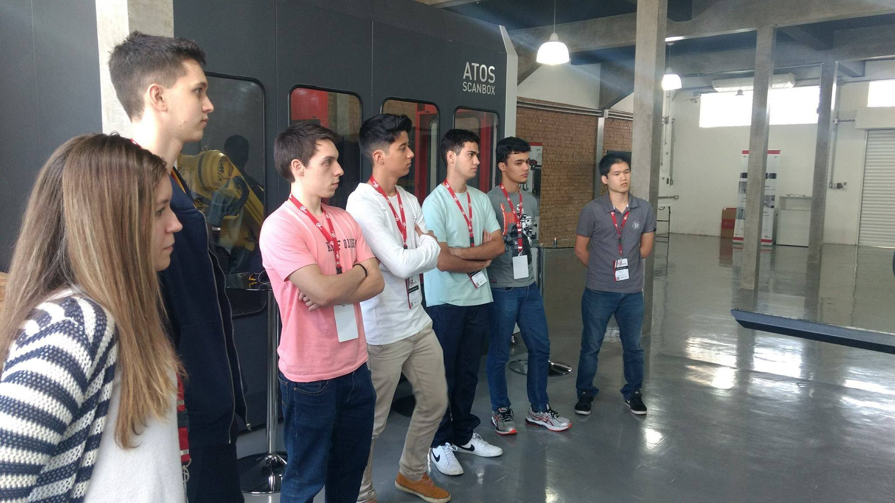
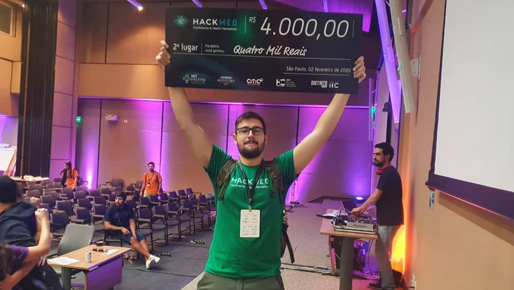

PET Mecânica da Escola Politécnica da USP
O PET-Mecânica foi criado em 1991, ao mesmo tempo que o PET-Mecatrônica e o extinto PET-Minas.
Saiba mais
Principais atividades do PET Mecânica
Um dos principais objetivos das atividades é disseminar conhecimento.
Saiba mais